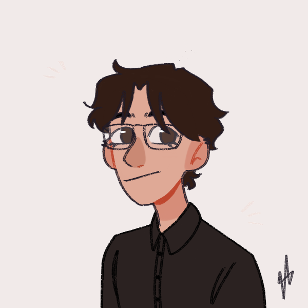

Work Experience
Waiter
Poke Cumbaya - Quito, Ecuador2017-2019
Greeted customers warmly, provided menus, and offered recommendations on food and beverage choices.
Arranged tables with proper settings and utensils, maintaining a clean and organized dining area. Cleared tables promptly after each course.
Accurately processed payments, including handling cash transactions and operating point-of-sale systems efficiently.
Collaborated with kitchen staff and other wait staff to ensure timely and coordinated service.
System Support Technician
"Sagrado Corazón" Medical Center - Quito, Ecuador 2021-2022
Diagnosed and resolved hardware, software, and network-relatedissues reported by end-users.
Maintained accurate records of technical issues, resolutions, and configurations
Performed regular maintenance tasks, including software updates, system backups, and security patches
Kept track of hardware inventory, ensuring an adequate supply of equipment, and liaised with vendors for procurement and repairs when necessary
Picture
Abilities
Soft Skills
- Python
- C++
- C#
- Java
- Android Studio
Soft Skills
- Client Management
- Team Player
- Problem Solving
- Planning and Organizing
Languages
- Spanish
- English